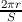
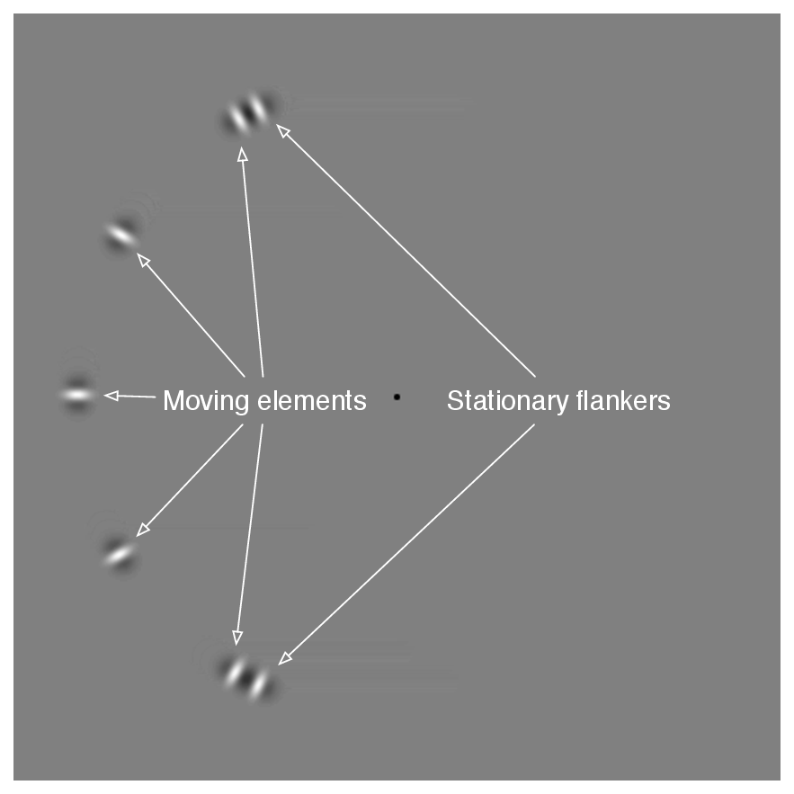
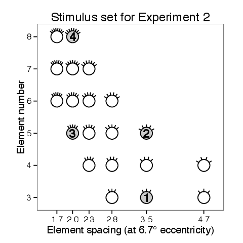
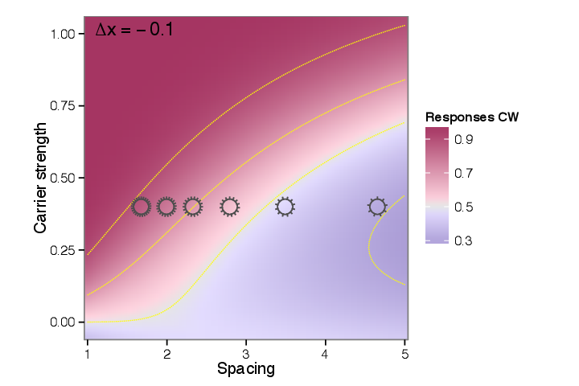
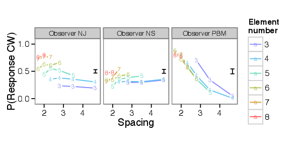
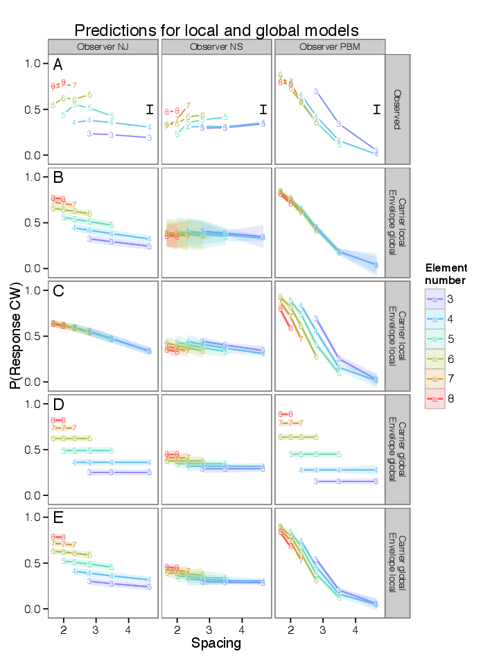
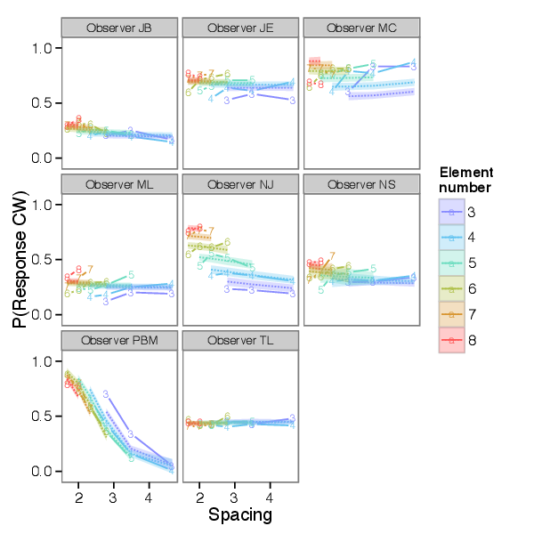

In Experiment 1 I reported that judgements of motion direction were more sensitive to envelope motion when spacing is large. In that experiment, because spacing was determined by changing the number of elements, the same results could equally well be described as sensitivity being higher when there are fewer elements. Similarly, in the case of carrier motion, I modeled the sensitivity to carrier motion as being proportional to the number of identical elements, but it could also be described as inversely proportional to the spacing between elements. Mathematically this would be expressed by substituting N for  in the model formulation or vice versa. This leaves the question of which variable provides a better characterization of motion perception in this task.
Experiment 2 attempts to resolve the confounding of spacing and element number, to determine which provides a better characterization of motion perception in this task. The answer does not have to be the same for both types of motion; sensitivity to envelope motion may be determined by number while sensitive to number whereas sensitivity to carrier motion is determined by spacing, or vice versa. Another way to frame the question is to ask whether the changes in sensitivity to envelope and carrier motion are due to influences from nearby flankers, or due to effects at a larger scale. For both carrier and envelope motion, a dependency on element spacing (as opposed to number) would imply a LOCAL process, sensitive to the immediate context of each element but insensitive to elements farther away. Conversely a dependence on element number would indicate a GLOBAL process, which combines information across multiple elements even at large separations. To distinguish these alternatives, in Experiment 2 I used stimuli which decoupled the number of elements from the element spacing by creating a display where the elements cover only a portion of the scene. I did this by varying the extent of the stimulus, defined as the circumferential distance covered by the array of moving elements, as shown in Figure 6.1. That is, the elements form a partial instead of a full circle.
If the array of elements covers only a portion of the scene, spacing and number can be varied independently. This involves varying the extent of the stimulus, defined as the circumferential distance covered by the array of moving elements. Any two of these variables (spacing, number, and extent) determine the third, so I will somewhat arbitrarily focus on spacing and element number as the relevant variables.

The task was identical to that in Experiment 1. The motion elements were fixed at 6.67∘ eccentricity. The stimulus consisted of evenly spaced moving elements, identical to those in Experiment 1, but instead of being distributed around the entire circle, the elements were distributed along a partial-circle on either the left or right wide of the display. Stimuli were positioned either left or right of the fixation point. In pilot experiments observers found it difficult to judge the direction of motion if the stimulus appeared in a random location on each trial, so stimuli alternated between hemifields in blocks. Each session used an equal number of stimuli positioned in the left and right hemifields, with the position alternating in blocks of 100 to 200 trials.
I varied both the spacing and the number of elements used; accordingly, the total spatial extent of the stimulus varied from trial to trial. The stimuli used are plotted in Figure 6.3. This stimulus set was constructed so that each value of spacing was tested using more than one value for the element number, and vice versa. I chose a set of stimuli that was symmetrically arranged in element number and spacing, spanning a similar range for both variables (covering a factor of 2.67 in element number and a factor of 2.78 in element spacing.)
| A |  |
| B |  |
In addition to the moving elements, the display included two stationary flanking elements, indicated in Figure 6.1. These served to hide the displacement of outermost moving elements, which would otherwise be easy to discern, as elements on the edge of an array suffer less crowding than elements within the array (Felisbert et al., 2005). The flankers had no envelope movement and zero carrier strength (i.e., they flickered in counterphase.) The space between the moving elements and the flankers changes over the course of the trial as the elements move; the flankers were positioned so that they were between 0.5° and 1° away from the adjacent moving element at its closest approach, which prevented conspicuous gaps opening or closing between the flankers and the moving elements during the brief motion stimulus. The flankers spanned a partial circle that was at least 56° and no more than 165° measured around the fixation point. The movie shown in demonstrates these stimuli for the four configurations indicated with numbers in Figure 6.3.
While element spacing and number varied across trials, carrier and envelope motion were held constant during each session. I selected values for direction content and envelope motion for each subject based on preliminary findings of Experiment 1; with the intent to find values such that that changes in spacing or number would produce a distinct change in response rate. Figure 6.5 illustrates the choice of stimulus parameters for one observer, with reference to the model fit from Experiment 1 shown as a heatmap as in Figure 5.4. Some observers were tested using more than one value of envelope displacement or carrier strength, but results were qualitatively similar in these cases, so they are aggregated in the graphs shown in this thesis; the original values were preserved in modeling. Table 1 shows the selections of carrier strength and envelope displacement used for each observer.
| Observer | Envelope displacement | Carrier strength | |
| 1 | JB | -0.1 - 0.000 | 0.4 |
| 2 | JE | 0.0 | 0.4 |
| 3 | MC | 0.4 | 0.4 |
| 4 | ML | -0.1 | 0.4 |
| 5 | NJ | -0.2 - -0.044 | 0.4 |
| 6 | NS | -0.2 - 0.000 | 0.2 |
| 7 | PBM | -0.5 | 1.0 |
| 8 | TL | -0.4 | 0.2 - 0.4 |

Of the observers who had previously participated in Experiment 1, 8 participated in Experiment 2. Example data for three observers is shown in Figure 6.4. Each plot shows the rate at which subjects responded “clockwise” to a stimulus at a particular value of spacing and of element number, with the spacing values indicated on the horizontal axis and element numbers indicated by color and symbol. The response patterns of these two observers appear different. NJ’s direction judgements change little with changes in element spacing, while being greatly affected by changes in element number. In contrast, PBM’s responses are sensitive to changes in spacing, while being little affected by changes in element number. NS shows a slight increase in proportion of responses clockwise with increasing spacing, while PBM shows a steep decrease. However, despite these differences, there are commonalities in these data sets. For none of the observers does there appear to be much interaction between spacing and element number; the lines traced out by changing spacing at a smaller number of elements are roughly parallel to the lines traced out by changing spacing at a larger number of elements.
I checked whether there was an interaction between spacing and element number using a logistic regression. Considering only the data from Experiment 2, the data may be empirically fit by a logistic regression; for fixed values of carrier and envelope motion, a simple regression model is
where, βN controls the change in motion sensitivity as a function of element number, βS the sensitivity as a function of spacing, βE the interaction term due to the stimulus extent. an interaction term. β0 and I are intercept and bias terms. Note that each term includes a factor of C, whose sign randomly alternates from trial to trial; the regression is modeling the response to carrier motion strength in terms of the number of elements and the spacing. (The spatial displacement is disregarded for this regression, because it always has the same sign relation to carrier motion in this experiment.)
The quality of fit for βN and βS are good, achieving RL2 scores of .87 and .87, respectively, aggregated over all observers (as described in , these measures compare the given model against a null model with constant effect and a full model saturated over each value of the given variable.) In the absence of an interaction term, βS was found significantly different from zero at the p < 0.05 level for 6/8 observers, and βN significantly differed from zero for 6/8 observers. Thus the response rates depend on both spacing and number. The support for an interaction term βE is weaker. When models included the interaction term, the resulting coefficients varied in sign, and aggregated over all observers only obtained a RL2 score of .25. Thus it appears to be a satisfactory qualitative description of the data to say that motion direction judgements covary with spacing and element number, without much interaction. In the next section I will evaluate whether a single model fit may account for data from both this experiment and Experiment 1.
The lack of interaction can be predicted from the model sketched in Section 4. This model predicts that there will be a progressive change in sensitivity to envelope motion as a function of spacing (or number) and there will be a change in sensitivity to carrier motion based on changes in the number or elements (or their spacing). Thus, as either spacing or number changes, the proportion of responses clockwise will progressively change, with the amount of change dependent on the observer’s particular sensitivity to envelope and carrier motion and the particular stimulus parameters. Thus, the model of Section 4 would not predict much interaction between spacing and element number. Note that a lack of interaction also implies that there is not a limited spatial range of summation coming into play; that is, if element number determines carrier sensitivity, an element far away from the locus of attention adds as much as an element nearby. If carrier motion were integrated over a spatial scale within the range tested by this experiment, we would see summation trail off for stimuli with larger spatial extents, which would have produced an interaction in this data.
I extended the model from Section 4 to the data from Experiment 2 and fit it to data from both experiments. There are four general scenarios under which the model may be extended to these stimuli, based on whether the sensitivity to envelope motion was determined by spacing (envelope local) or element number (envelope § 6.2.2global,) and by whether the sensitivity to carrier motion was determined by spacing (carrier local) or by element number (carrier global.) These four models make identical predictions for the data from Experiment 1, but differ in their predictions for Experiment 2.
The “global” models calculated the sensitivities to motion as a function of the number of elements falling within a hemifield. That is, the trials from Experiment 1 are considered to have an N equal to half the number of elements that were actually displayed, while trials from Experiment 2 use the full count. This appeared to fit better than using the complete element count for both trial types, and is consistent with the observation that the effect of crowding does not cross the vertical meridian (Liu et al., 2009).
For some observers, the responses appeared to differ between left and right hemifields; this is consistent with the observation that the critical spacing of crowding is not uniform across the visual field (Petrov and Meleshkevich, 2011). Another confound may be the influence of the stationary flankers located on either end of the array of objects. The intention behind including these flankers was to avoid giving away the envelope motion by the motion of the outermost elements, since effective crowding requires flankers on either side of a target (Toet and Levi, 1992; Pelli et al., 2004), and is weaker for targets closer to the ends of an array (Felisbert et al., 2005). While the flankers prevented the envelope motion from becoming uncrowded, they may have induced other side effects, since being positioned at the ends of the array makes them more salient than the moving elements and their lack of carrier or envelope motion is likely to have weakened both types of motion signal.
I added two parameters to account for possible effect of endpoints and for differences in carrier motion sensitivity between hemifields, making the substitution
where e indicates whether endpoint flankers are present, and h takes on values of -1, 0, or 1 based on which hemifield the stimulus is shown in. Note that this adjustment was the same for all four models considered here. The ranking of local and global scenarios was similar with or without this adjustment.

Example results are shown in Figure 6.5. These show the model predictions corresponding to four scenarios (labeled on the right side.) For comparison the observed data is shown in the top row. Visually, these predictions confirm that both the entirely-local (row C) and entirely-global scenarios (row D) cannot capture the behavior of every observer. When both carrier and envelope processing depends on global element number, there is no change in response rate with spacing (row D), and when both carrier and envelope motion sensitivity depend on local spacing, the change in response rate with element number is not captured (row C).
The two remaining alternatives are carrier global, envelope local (row B) and carrier global, envelope local (row E). Between these alternatives, carrier global, envelope local appears to fit the data better. Aggregated across observers, it fits with the highest likelihood out of the four models, with a log-likelihood ratio of 407 over the next best fit. However, the comparison in likelihoods does not hold for every observer. Given local envelope motion, global carrier motion gave a better fit, in terms of likelihood, for 7 out of 8 observers. Results for envelope motion were more equivocal; given global carrier motion, local envelope motion fit better for 4 out of 8 observers. However as mentioned earlier, unknown effects of the flankers may be present which would tend to make strict likelihood comparisons unreliable. Visually comparing the complete set of model predictions (Figure 8.26) I find that carrier global, envelope local (column E) does the best job at capturing the directions of effect; models with global envelope motion often have the wrong direction of effect for changes in element number (see observers JE, MC, ML.) It is possible that a mixture of local and global effects determines envelope motion visibility.

The model fits to the data from this experiment for all the observers tested are shown in Figure 6.3. In summary, as discussed in more detail below, results from Experiment 2 suggest that the summation of carrier motion is determined over a large spatial scale, large enough to encompass several targets, while the decline in sensitivity to envelope motion might be determined within a smaller spatial scale (though this point needs additional confirmation.)